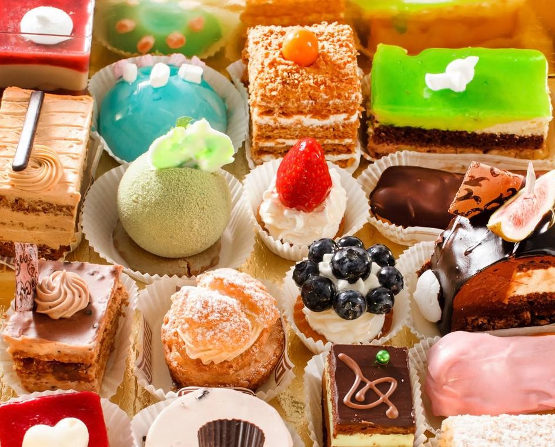
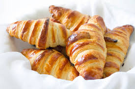
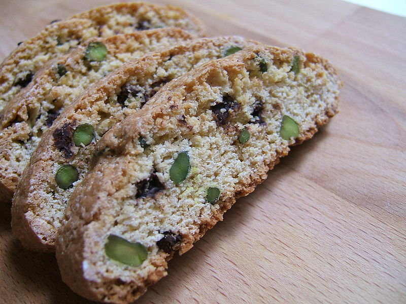
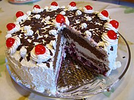
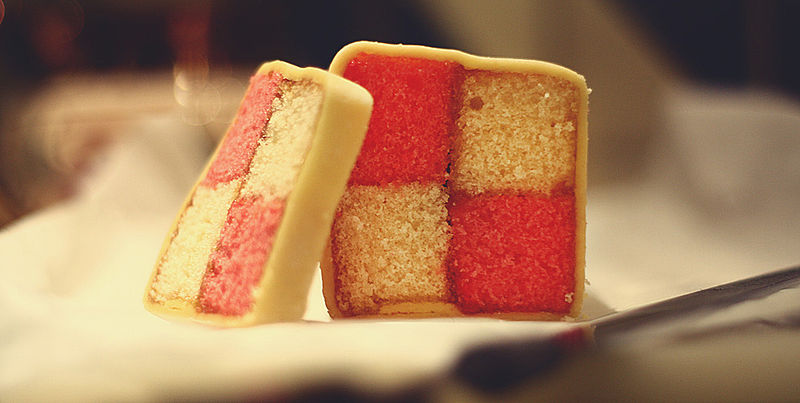
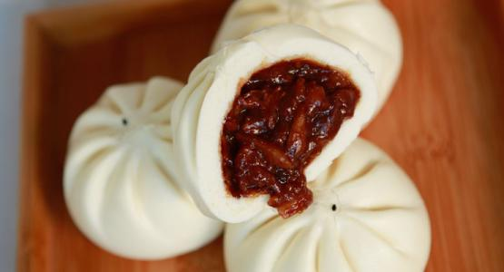
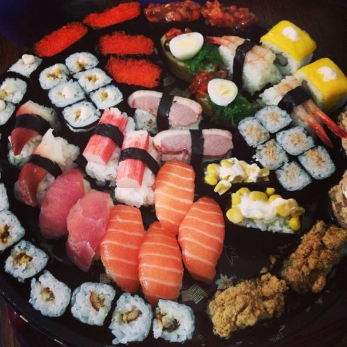

FACTS
Pastry itself is a dough of flour, water and shortening(solid fats including butter) that may be savoury or sweetened. The word "pastries" suggests many kinds of baked products made from ingredients such as flour, sugar, milk, butter, shortening, baking powder, and eggs. Pastry became famous from France, known as "patisserie" in French.
French Pastries
France is famous the world over for its decadent desserts and delightful pastry concoctions. The word "dessert" itself is actually derived from the French word "desservir" which means "to clear the table". French pastries are usually made of custard, cream, and fruits. Croissants is one of French pastries.
Italian Pastries
Italy is famous of its pastries. Italian desserts range in flavor from slightly bitter to sweet but usually not overwhelmingly sweet and are often best served with wine
Germany Pastries
Germany pastries usually serve with cakes, tarts, and any other pastries. Those are commonly made with fresh fruit, such as apple, plums, strawberries, and cherries. Cheesecake and Black Forest cake are also very popular in this country.
British Pastries
British has a long tradition of noted sweet-making pastry desserts. Banbury cake, battenberg cake, malt loaf, and especially, carrot cake are from British.
Chinese Pastries
Chinese pastry is also famous of its unique and delicious flavour. It is made from rice or different types of flour with fruit, sweet bean paste, or sesame-based fillings, such as steamed pork buns and moon cakes.
Korean and Japan Pastries
|  |
Besides China, Korean also has their own traditional pastry such as tteok, hangwa, and yaksik with flour, rice, fruits, and regional specifics ingredients.
Japan also has specialized pastry-confections such as mochi and manju.